Het volgende ritje
is voor jullie
Gefeliciteerd Modus
RitSync
is live !!
Pak er een en stuur ons een tikkie
De mannen van Rit
Sync
.

▶ Steek de lont aan
een halve minuut vuurwerk · zet je geluid aan
Opnieuw